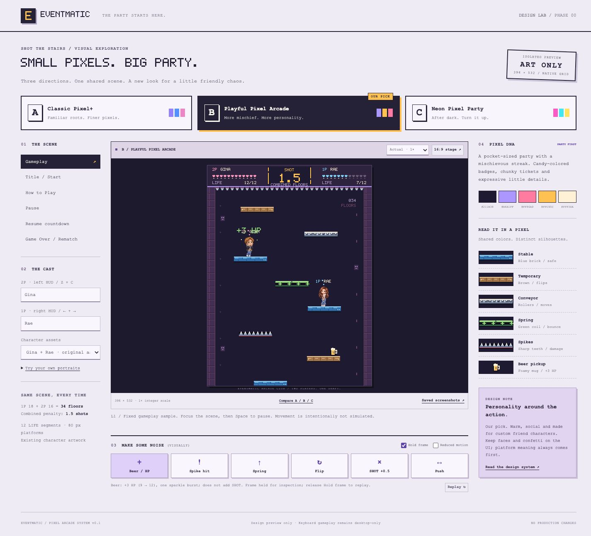
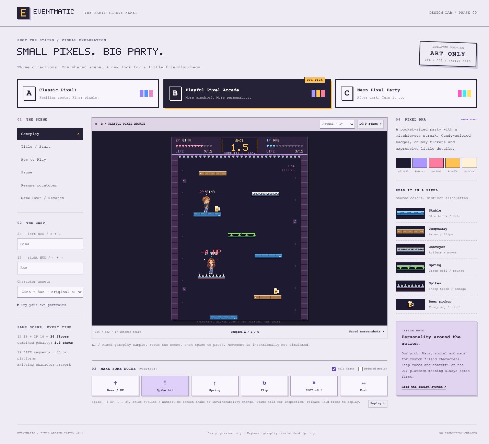
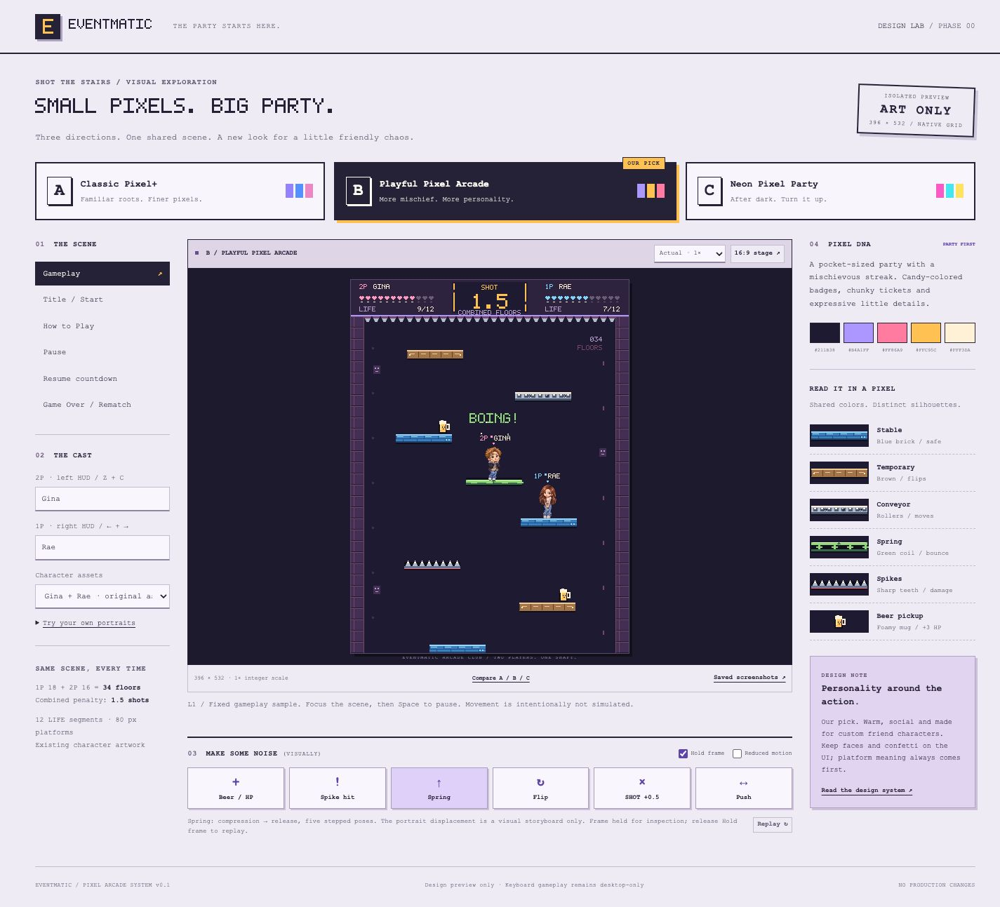
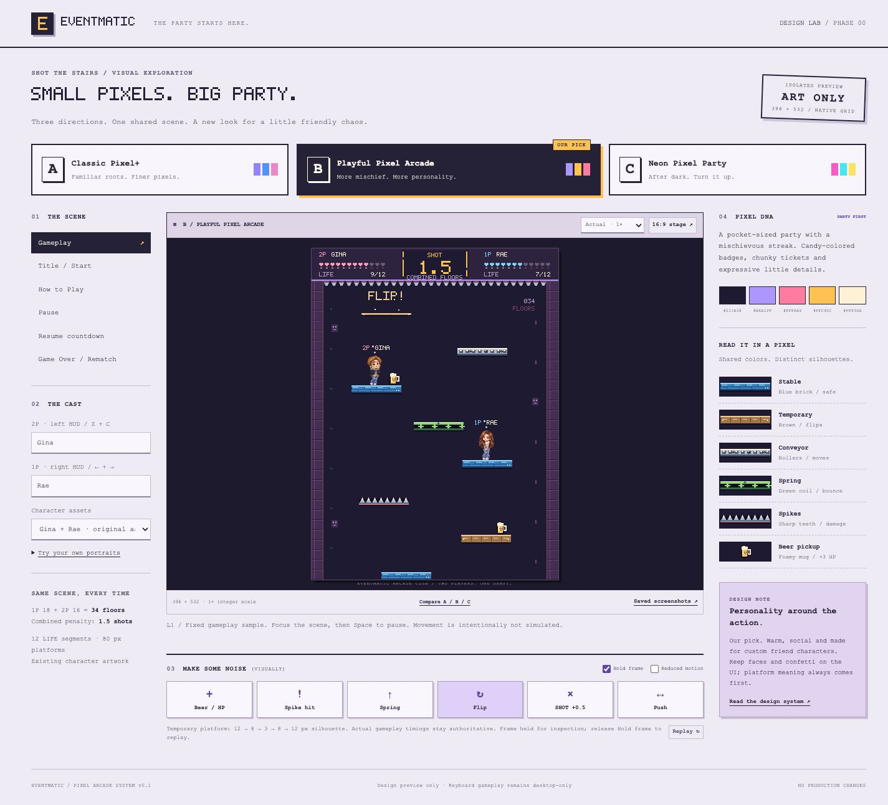
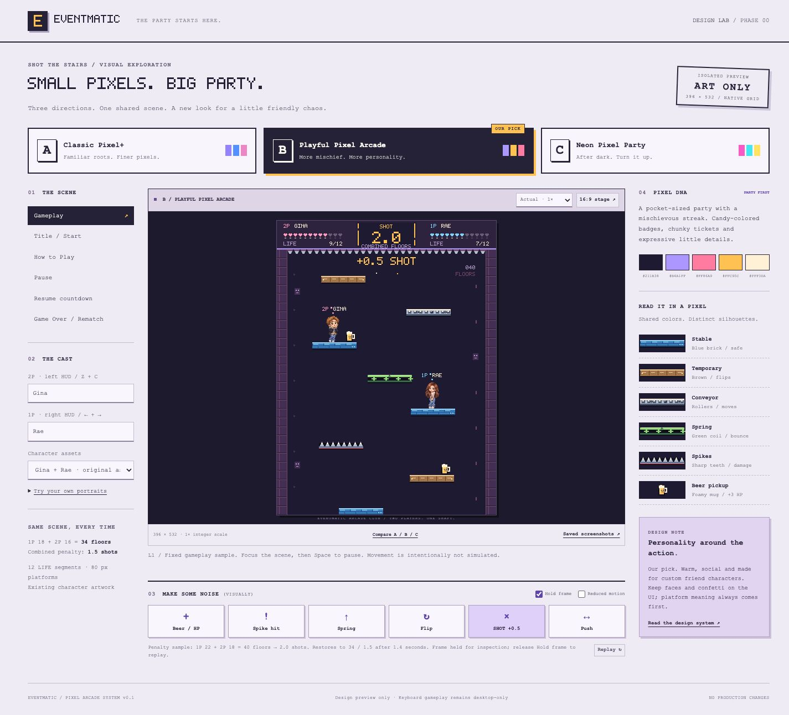
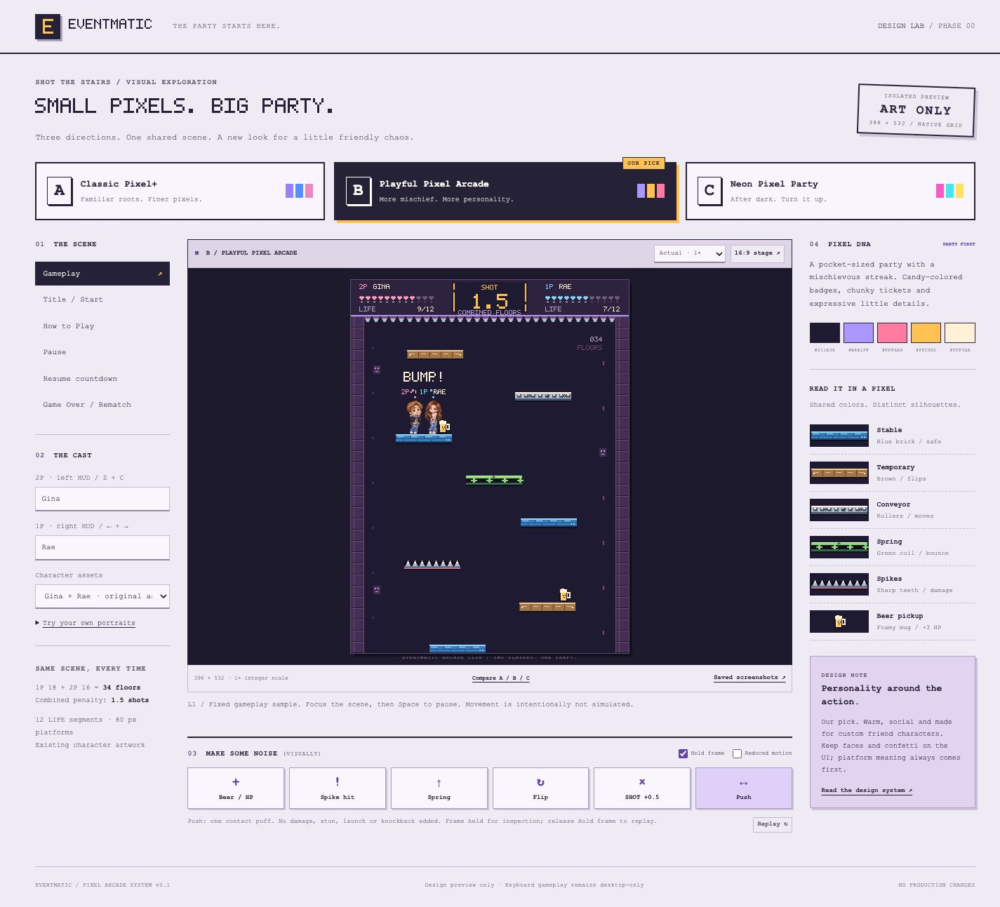

EVENTMATIC / PHASE 00 / 2026-11-12
Small pixels. Three personalities.
Browser captures of the isolated preview. A, B and C share one 396 × 532 scene. The 1080p projector uses 2× integer art; 720p uses 1×. Tablet and phone images show design-review layouts, not supported mobile gameplay.
Captures are JPEGs from the browser capture API. Inspect the live canvas at Actual · 1× for lossless pixel review. Full-page captures exclude the scrollbar gutter; a requested 1440 px viewport can produce a 1425 px-wide image. Screen and feedback captures were collected during final review, so minor lab-toolbar differences may appear.
Three directions


Screens


Feedback


B-effect-beerOpen full-size capture ↗

B-effect-damageOpen full-size capture ↗

B-effect-springOpen full-size capture ↗

B-effect-flipOpen full-size capture ↗

B-effect-shotOpen full-size capture ↗

B-effect-pushOpen full-size capture ↗